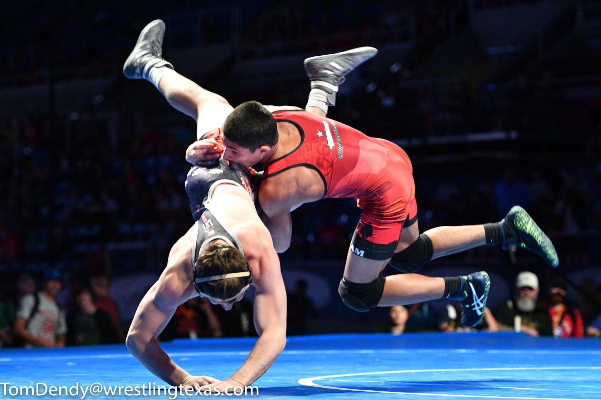

How to be a great wrestler

There's a lot of things you can do to be a great wrestler but one of the main priorities is to practice set ups and take downs every single day and have it be a fast pace but make sure you don't have bad technique!
Cardio!
Cardio is also one of the most important things you need to be a successful wrestler because if you don't have good cardio you will gas out and give up easily.
Cutting weight
Cutting weight is one of the toughst things to do in wrestling. It consist of straving yourself and not drinking much liquids.
Drill moves over and over, everyone has their special moves that their good at so when you're getting close to a tourment or something drill you highest percentage moves.
Continuous Training
The great wrestlers are always training to become a better wrestler. If you talk to most elite wrestlers, you will discover that almost all of them wrestle during the summer time. Some will work on chain wrestling at practice and maybe attend a couple of freestyle tournaments and others will have a complete season where they attend multiple tournaments. Other wrestlers may not attend any tournaments but may attend a summer wrestling camp. The common theme here is that every serious wrestler is striving to get better at wrestling. Have you ever seen a state champion that didn’t look chiseled? You will notice that every serious wrestler spends the summer in the weight room.Heres more info to help your wrestling
Be consistent if you want to know how to get better at wrestling. Great wrestlers wrestle the same way from the time the whistle blows to the very end of the match. They are aggressive and looking to take advantage of any mistake that their opponent makes. That is why a great wrestler is hard to beat. They never let up. Consistency is key to getting better at wrestling. They are consistent in their wrestling diet, training regimen, and continuing to learn and improve. Champions are continually pushing themselves and learning how to become a better wrestler.